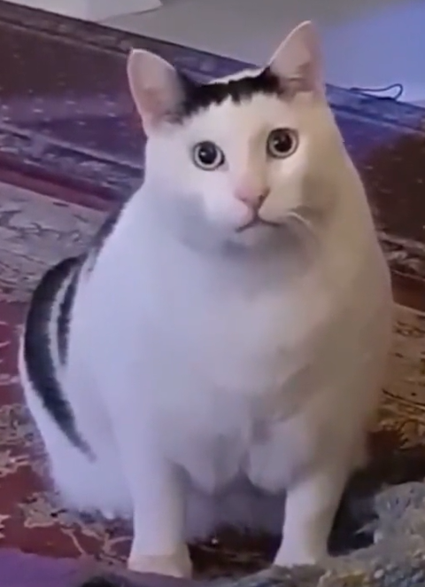

Товстенький біло-чорний кіт
Цей пухкенький біло-чорний кіт не тільки виділяється своїми розмірами, але й дивує всіх своїм унікальним звуком, який нагадує щось середнє між муркотінням і співом пташки. Його цікаві звуки роблять його ще більш чарівним!